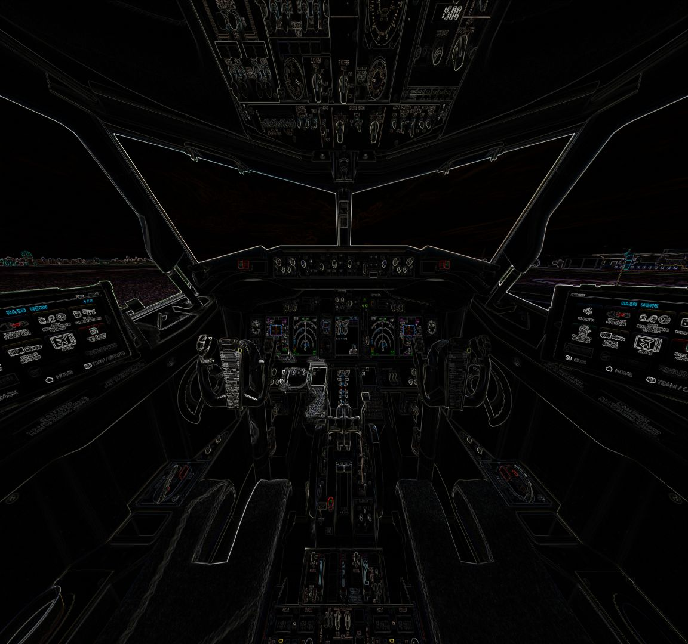

<!doctype html>

<html lang="en">

<head>
    <meta charset="utf-8">
    <meta name="viewport" content="width=device-width, initial-scale=1">

    <title>XPL views</title>
    <meta name="description" content="X-camera views selector for Zibo 737-800">

    <link rel="stylesheet" href="css/styles.css">
    <script src="js/xpl-web-api.js"></script>
    <script src="js/menu.js"></script>
</head>

<body>
    <script>
        // until X-plane fixes CORS for POST and access from local network
        // proxy has to be used at X-plane computer - e.g. running command:
        //   lcp --proxyUrl http://localhost:8086
        // see https://github.com/garmeeh/local-cors-proxy

        //const xplApi = XplWebApi();
        const xplApi = XplWebApi({ apiUrl: 'http://192.168.1.121/xpl-api/api/v2' });

        const buttons = [
            {
                style: "top: 5px; left: 50%; transform: translate(-50%, 0);",
                text: 'After overhead',
                command: 'SRS/X-Camera/Select_View_ID_6',
            },
            {
                style: "top: 90px; left: 50%; transform: translate(-50%, 0);",
                text: 'Overhead',
                command: 'SRS/X-Camera/Select_View_ID_5',
            },
            {
                style: "top: 220px; left: 40%; transform: translate(-50%, 0);",
                text: 'Pilot',
                command: 'SRS/X-Camera/Select_View_ID_3',
            },
            {
                style: "top: 220px; left: 60%; transform: translate(-50%, 0);",
                text: 'Copilot',
                command: 'SRS/X-Camera/Select_View_ID_8',
            },
            {
                style: "top: 250px; left: 5%;",
                text: 'Left',
                command: 'SRS/X-Camera/Select_View_ID_1',
            },
            {
                style: "top: 250px; right: 5%;",
                text: 'Right',
                command: 'SRS/X-Camera/Select_View_ID_9',
            },
            {
                style: "top: 350px; left: 2%;",
                text: 'Tablet',
                command: 'SRS/X-Camera/Select_View_ID_2',
            },
            {
                style: "top: 320px; right: 48%",
                text: 'Cockpit',
                command: 'SRS/X-Camera/Select_View_ID_10',
            },
            {
                style: "top: 420px; right: 50%",
                text: 'FMC',
                command: 'SRS/X-Camera/Select_View_ID_4',
            },
            {
                style: "bottom: 50px; left: 50%; transform: translate(-50%, 0);",
                text: 'Pedestal',
                command: 'SRS/X-Camera/Select_View_ID_7',
            },
        ];

        // after the page is loaded, create buttons in parent div id internalViews
        window.addEventListener('DOMContentLoaded', () => {
            // create menu
            buildMenu('menu', 'in-views.html');
            // add buttons to the internalViews div
            const internalViews = document.getElementById('internalViews');
            buttons.forEach(button => {
                const btn = document.createElement('button');
                btn.style = button.style;
                btn.innerText = button.text;
                btn.className = 'button-view float-button';
                btn.onclick = () => xplApi.executeCommand(button.command);
                internalViews.appendChild(btn);
            });
        });
    </script>
    <div id="menu" class="menu-container"></div>
    <div style="transform: scale(0.75); transform-origin: top left;">
        <div style="position: relative; width: 800px; margin: 0 0;" id="internalViews">
            <!-- -->
            
        </div>
    </div>
</body>

</html>